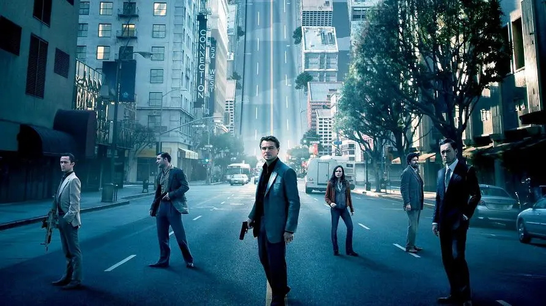

盗梦空间

概况
导演: 克里斯托弗·诺兰
编剧: 克里斯托弗·诺兰
主演: 莱昂纳多·迪卡普里奥 / 玛丽昂·歌迪亚 / 渡边谦 / 约瑟夫·高登-莱维特 / 艾伦·佩姬 / 更多...
类型: 悬疑 / 剧情 / 惊悚 / 犯罪
制片国家/地区: 美国
语言: 英语
上映日期: 2010-07-16
片长: 148分钟
剧情简介
多姆·柯布（莱昂纳多·迪卡普里奥饰演）是一位经验老道的窃贼，他在这一行中算得上是最厉害的，
因为他能够潜入人们精神最为脆弱的梦境中，
窃取潜意识中有价值的秘密。柯布这一罕见的技能使他成为危险的企业间谍活动中最令人垂涎的对象，
但这也让他成为了一名国际逃犯，失去自己的所爱。
如今柯布有了一个赎罪的机会，只要完成最后一项任务他的生活就会恢复本来面目。
与以往不同的是，柯布和他的团队这一次的任务不是窃取思想，而是植入思想。如果他们成功，这就是一次完美犯罪。
但是即使提前做好了细致专业的安排，也无法预料到危险的敌人对他们的行动早已了如指掌，
而只有柯布能够预料到敌人的行踪。
回到上一页